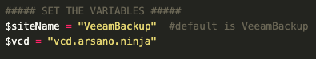
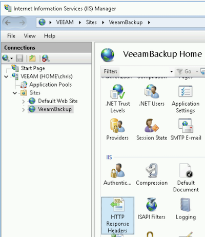
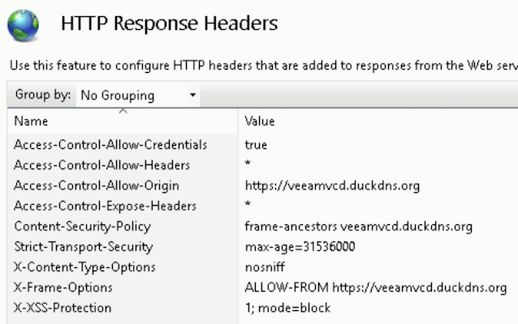
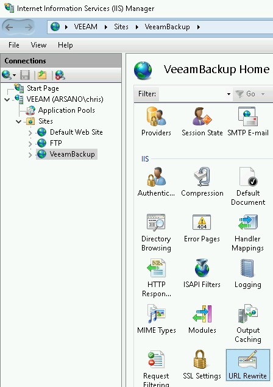

Veeam VCD Self-Service Backup Portal (VSSP)
Note
The configuration below must be performed any time you install/upgrade Enterprise Manager.
IIS Configuration
As a secure web application, we'll need to make a few minor adjustments to the Enterprise Manager (EM) web server to avoid CORS policy violations.
Automated Configuration
Included with the Release Files is a PowerShell script to automate the IIS configuration. Using this script is super easy:
- Copy the
Set-IIS-Config.ps1script to the Enterprise Manager server - Edit the script and update the variables in the script accordingly to your environment

- Run the script
- Upon successful completion of the script, your IIS configuration is complete and you can proceed to the next step: Veeam Plugin Deployment
Manual Configuration
Please follow the steps below:
- On your EM server, open
Internet Information Services (IIS) Manager - Navigate to the
VeeamBackupsite (see screenshot below) and openHTTP Response Headers

- Add/Update the below entries:
- Access-Control-Allow-Credentials:
true - Access-Control-Allow-Headers:
* - Access-Control-Allow-Origin:
<VCD URL> - Access-Control-Expose-Headers:
* - X-Frame-Options:
ALLOW-FROM <VCD URL> - Content-Security-Policy:
frame-ancestors <VCD FQDN>- Content-Security-Policy is not required for EM v10
- Access-Control-Allow-Credentials:
Note the screenshot below. In this example, the VCD public URL is https://veeamvcd.duckdns.org.

Enterprise Manager v10
If version of Enterprise Manager you're running is v10 or newer, you'll also need the following additional configuration:
- On your EM server, open
Internet Information Services (IIS) Manager - Navigate to the
VeeamBackupsite (see screenshot below) and openURL Rewrite

- Create the following
Precondition for Outbound Rules:- Name:
vCloud - Using:
Regular Expressions - Logical grouping:
Match All - Condition input:
{REQUEST_URI} - Check if input string:
Matches the Pattern - Pattern:
^.*/vCloud/.*$ - Ignore case: checkbox checked
- Name:
- Create the following
Outbound Rule:- Match
- Name:
Allow iframe for vCloud - Precondition:
vCloud - Matching scope:
Server Variable - Variable name:
RESPONSE_Content-Security-Policy - Variable value:
Matches the Pattern - Using:
Wildcards - Pattern:
* - Ignore case: checkbox checked
- Name:
- Conditions
- Logical grouping:
Match All - Condition input:
{RESPONSE_Content-Security-Policy} - Check if input string:
Matches the Pattern - Pattern:
*;*;*;*;*;*;*;*;*;*;*;*; - Ignore case: checkbox checked
- Track capture groups across conditions: checkbox checked
- Logical grouping:
- Action
- Action type:
Rewrite - Action Properties Value:
{C:1};{C:2};{C:3};{C:4};{C:5};{C:6};{C:7};{C:8};{C:9};{C:10};{C:11}; frame-ancestors <VCD FQDN>;- Example: frame-ancestors veeamvcd.duckdns.org
- Replace existing server variable value: checkbox checked
- Action type:
- Match